승강기산업기사 (2003-05-25 기출문제)
1과목: 승강기개론
1. 균형추에도 비상정지장치를 설치하여야 할 경우는?
- 균형추 하부의 완충기 설치를 생략해야 할 구조일 때
- 적재하중이 4000kg이상의 무기어식 엘리베이터일 때
- 승강로 하부의 피트 밑에 창고나 사무실이 있을 때
- 속도가 300m/min이상의 고속 엘리베이터일 때
(정답률: 80%)

2. 레일의 표준길이는 승강로내의 반입을 편리하게 하기 위하여 몇 m 로 하고 있는가?
- 4.5
- 5
- 5.5
- 6
(정답률: 88%)
3. 승강기에 사용하는 주로프의 파단강도는 몇 kgf/mm2 정도 인가?
- 65∼80
- 85∼95
- 100∼125
- 135∼165
(정답률: 60%)
4. 에스컬레이터에서 스커트가드와 디딤판과의 틈새는?
- 1mm이하
- 2∼5mm이하
- 3∼7mm이하
- 5∼10mm이하
(정답률: 70%)
5. 일반적으로 권상용 주로프에 주로 많이 사용되는 것끼리 짝지어져 있다. 옳은 것은?
- 8×S(19), 보통 Z꼬임
- 8×W(25), 보통 S꼬임
- 8×S(25), 보통 S꼬임
- 8×W(25), 보통 Z꼬임
(정답률: 83%)
6. 유압 승강기의 장점은?
- 소비전력이 적게 든다.
- 유지보수가 간단하고 속도 조정이 용이하다.
- 기계실 위치가 자유롭고 승강로 상부에 기계실 설치가 없어도 된다.
- 고층건물에 설치가 용이하다.
(정답률: 82%)
7. 균형로프 및 균형체인의 기능으로 옳은 것은?
- 승강행정이 긴 경우 주로프의 무게를 보상
- 카의 수평 바란스를 개선
- 카와 균형추의 무게를 조정
- 균형추의 무게 보상
(정답률: 63%)
8. 승강장의 신호장치로 볼 수 없는 것은?
- 위치표시기
- 홀랜턴(hall lantern)
- 방향등
- 인터폰(interphone)
(정답률: 83%)
9. 승강기의 분류 중 속도에 의한 분류에서 중속 엘리베이터에 해당되는 것은?
- 45 m/min
- 60 m/min
- 120m/min
- 160m/min
(정답률: 85%)
10. 카의 속도가 정격속도를 초과하여 정격속도의 140%이하에서 로프가 절단되거나 기타의 원인으로 카가 급강하할 때 이와같은 속도를 조속기나 또는 기타의 장치가 감지하여 작동하므로서 카를 정지시키는 장치는?
- 인터록장치
- 전자감응장치
- 비상정지장치
- 록다운정지장치
(정답률: 89%)
11. 속도가 60m/min인 엘리베이터의 비상정지장치가 작동하는 속도는 몇 m/min 인가?
- 78
- 84
- 96
- 108
(정답률: 73%)
12. DC 엘리베이터의 속도는 몇 m/min 이상에 주로 사용되고 있는가?
- 40
- 60
- 90
- 120
(정답률: 59%)
13. 기계실에 자연환기시설을 할 때 환기창 또는 갤러리 등의 합산 크기는 기계실 바닥면적의 얼마 이상이어야 하는가?
- 1/20
- 1/30
- 1/40
- 1/50
(정답률: 69%)
14. 엘리베이터 기계실 구조에 대한 설명으로 맞는 것은?
- 주요한 기기로부터 기둥이나 벽까지의 수평거리는 반드시 30cm이상으로 하여야 한다.
- 바닥면적은 반드시 승강로 수평투영면적의 2배이상으로 하여야 한다.
- 바닥면부터 천장 또는 하부까지의 수직거리는 반드시 2m이상이어야 한다.
- 기계실 천장에는 반드시 기기를 양정하기 위한 고리 등을 설치하여야 한다.
(정답률: 49%)
15. 도어 인터록의 기능에 대한 설명으로 맞지 않는 것은?
- 갇힘시 구출이 용이하도록 일반 공구로 도어록을 열 수 있어야 한다.
- 도어가 닫혀 있지 않으면 카의 운전이 불가능하도록 하는 도어스위치가 있다.
- 도어가 닫힐 때, 도어록 장치가 확실히 걸린 후 도어 스위치가 들어가야 한다.
- 도어가 열릴 때, 도어스위치가 끊어진 후에 도어록이 열리는 구조이어야 한다.
(정답률: 86%)
16. 2단속도 모터의 속도비는 여러 비율이 생각되지만 착상오차 이외의 감속도나 감속시의 저어크, 크리프 시간, 전력회생 등을 감안할 때 가장 많이 사용하는 속도비는?
- 2:1
- 3:1
- 4:1
- 6:1
(정답률: 66%)
17. 승강기에서 교류 1차전압 제어방식의 전동기에 관한 설명으로 옳지 않은 것은?
- 슬립이 작고 효율이 높다.
- 직류 전동기에 비해 유지보수가 용이하다.
- 직류 승강기용 전동기보다 소비전력이 크다.
- 발열량이 크다.
(정답률: 36%)
18. 로프식 엘리베이터의 승강로의 구조는 승강장 출입구바닥 앞 부분과 카 바닥 앞부분과의 틈의 너비는 몇 cm 이하로 하여야 하는가?
- 1
- 2
- 3
- 4
(정답률: 65%)
19. 케이지가 층사이에 갇혀 있을 때에 어느 밸브를 열면 케이지가 하강하는가?
- 릴리프밸브
- 다운밸브
- 업밸브
- 스톱밸브
(정답률: 68%)
20. 수평보행기의 디딤면이 고무제품 등 미끄러지기 어려운 것일 경우 최대 허용 경사도는 몇 도인가?
- 8°
- 10°
- 12°
- 15°
(정답률: 72%)
2과목: 승강기설계
21. 엘리베이터용 전동기의 용량 결정과 관계가 없는 것은?
- 정격속도
- 정격하중
- 로핑방식
- 행정
(정답률: 73%)
22. 어떤 이유로 카가 낙하할 때를 고려하여 승강로 피트 바닥의 강도설계를 하려고 한다. 이때 충격하중과 무관한 것은?
- 조속기의 과속스위치 작동속도
- 완충기의 행정
- 중력가속도
- 가이드레일의 두께
(정답률: 84%)
23. 비상사태가 발생되었을 때의 관제운전의 우선 순위가 올바른 것은?
- 비상운전＞지진관제운전＞정전구출운전
- 지진관제운전＞비상운전＞정전구출운전
- 정전구출운전＞지진관제운전＞비상운전
- 정전구출운전＞비상운전＞지진관제운전
(정답률: 75%)
24. 지체부자유자용 승용승강기의 출입문의 너비는 몇 cm이상으로 하여야 하는가?
- 60
- 80
- 90
- 100
(정답률: 44%)
25. 가이드 레일을 설계할 때의 고려사항으로 적당하지 않은 것은?
- 레일 부래킷은 카와 균형추 공용으로 할 수 있다.
- 중간 빔은 모두 양단 고정으로 보고 설계한다.
- 비상정지장치 작동시의 좌굴하중을 고려한다.
- 비상정지장치가 있는 경우에는 8K이하의 레일은 사용하지 않는다.
(정답률: 64%)
26. 11인승이고 16층을 운행하는 속도 90m/min의 비상용엘리베이터의 오버헤드는 몇 cm 인가? (단, 카 바닥에서 상부체대 끝까지의 거리는 3.5m이다.)
- 4.7
- 4.9
- 5.1
- 5.3
(정답률: 47%)
27. 정격속도가 60m/min인 유입식 완충기의 필요 최소 행정은 몇 mm 인가?
- 51 .5
- 67.5
- 102
- 135
(정답률: 43%)
28. 전동기 주회로에 380V의 전압이 사용될 때 절연저항은 몇 MΩ 이상이어야 하는가?
- 0.⑤
- 0.1
- 0.2
- 0.3
(정답률: 65%)
29. 미터인 유압회로에 대한 설명으로 틀린 것은?
- 상승운전시 효율이 대단히 좋다.
- 스타트 쇼크가 발생하기 쉽다.
- 압력의 영향을 거의 받지 않는다.
- 온도의 영향을 거의 받지 않는다.
(정답률: 58%)
30. 정격속도가 60m/min인 교류승강기의 카와 완충기와의 규정거리는 일반적으로 몇 mm 정도 되는가?
- 150∼300
- 200∼400
- 300∼600
- 400∼900
(정답률: 49%)
31. 엘리베이터 카가 전부하 상태에서 상승방향으로 가속했을 때, 배전선에 흐르는 최대 선전류를 무엇이라 하는가?
- 가속전류
- 감속전류
- 정격전류
- 전부하 상승전류
(정답률: 58%)
32. 카자중이 1500kg, 적재하중이 750kg, 승강행정이 30m이며, 0.5kg/m의 로프가 4본이 사용된 엘리베이터에서 균형추의 오버밸런스율을 38%로 하면, 최상층에서 빈 카로 하강시킬 때의 마찰비는 얼마 정도인가?
- 1.13
- 1.18
- 1.23
- 1.28
(정답률: 63%)
33. 회로의 사용전압이 400V이하인 제어반의 접지공사의 종류는?
- 제1종접지공사
- 제2종접지공사
- 제3종접지공사
- 특별제3종접지공사
(정답률: 74%)
34. 엘리베이터의 설계용 지진력을 계산할 때 수평진도(Kh)와 수직진도(Kv)의 관계를 바르게 나타낸 것은?
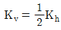
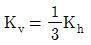
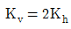
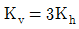
(정답률: 59%)
35. 일주시간 50초, 승객수 19 인 엘리베이터의 5분간 수송 능력은 몇 명인가?
- 23
- 91
- 114
- 143
(정답률: 82%)
36. 브레이크 라이닝에 대한 설명으로 틀린 것은?
- 석면 재질이어야 한다.
- 내열성이 커야 한다.
- 제동 효과가 양호하여야 한다.
- 내마멸성이 커야 한다.
(정답률: 73%)
37. 조속기가 제2단의 동작을 하여 비상정지장치를 작동시켜 카를 강제로 정지시킬 경우에 조속기의 동작속도는 정격 속도의 몇 배를 초과하지 않는 범위내 인가?
- 1.15
- 1.3
- 1.35
- 1.4
(정답률: 50%)
38. 로프와 시브와의 견인력에 대한 설명 중 틀린 것은?
- 단일감김(싱글랩핑)보다는 2중감김(더블랩핑)의 견인력이 더 크다.
- 폴리우레탄 홈라이너를 사용하면 견인력이 커진다.
- 카와 균형추의 무게를 증가시키면 견인력이 작아진다.
- 일반적으로 언더컷홈보다는 V홈의 경우가 트랙션 능력이 크다.
(정답률: 36%)
39. 엘리베이터용 가이드 레일을 설치할 때 가이드 레일의 허용응력은 일반적으로 몇 kg/cm2를 적용하는가?
- 1800
- 2000
- 2200
- 2400
(정답률: 57%)
40. 카의 실속도와 지령속도를 비교하여 다이리스터의 점호각을 바꾸어 유도전동기의 속도를 제어하는 방식은?
- 교류1단속도제어
- 교류2단속도제어
- 교류궤환제어
- 가변전압가변주파수제어
(정답률: 67%)
3과목: 일반기계공학
41. 다음 중 반동수차가 아닌 것은?
- 프란시스 수차
- 펠톤 수차
- 프로펠러 수차
- 카플란 수차
(정답률: 62%)
42. 평벨트에서 십자걸기(엇걸기)를 할 때의 벨트의 길이 계산식으로가장 적합한 것은? (단, C는 벨트의 중심거리, D1, D2 는 두 풀리의 지름)
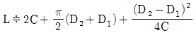
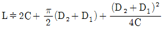
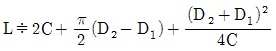
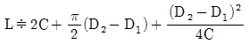
(정답률: 58%)
43. 철(Fe)이 상온에서 나타나는 결정 격자는?
- 조밀육방격자
- 체심입방격자
- 면심입방격자
- 사방입방격자
(정답률: 64%)
44. 기계의 분진이나 쇠 부스러기를 청소하기 위해서 사용하는 공구로 다음 중 가장 적당한 것은?
- 줄
- 스크레이퍼
- 정
- 브러쉬
(정답률: 90%)
45. 한 변의 길이가 9 cm인 정사각형 외팔보의 최대굽힘응력이 120 kgf/cm2 일 때 최대 몇 kgf.cm 까지의 굽힘 모멘트에 견디는가?
- 12540
- 14580
- 16720
- 18420
(정답률: 57%)
46. 베어링 합금의 구비 조건으로 적합한 성질은?
- 마찰 계수가 클 것
- 내마모성이 적을 것
- 내부식성이 적을 것
- 열전도성이 클 것
(정답률: 33%)
47. 다음 중 변형률(ε )의 단위로 맞는 것은?
- kg
- kg/cm
- kg/cm2
- 단위 없음
(정답률: 60%)
48. 지름 10 mm, 길이 1 m인 연강 환봉이 하중 1ton을 받아 0.6 mm 신장했다고 한다. 이 봉에 발생하는 응력은 약 몇 MPa인가?
- 1.25
- 12.5
- 125
- 1250
(정답률: 54%)
49. 다음 중 펌프의 캐비테이션의 방지책이 아닌 것은?
- 펌프의 설치 높이를 가능하면 낮춘다.
- 펌프의 회전수를 높게 한다.
- 편흡입을 양흡입 펌프로 고쳐서 사용한다.
- 흡입 비속도를 적게 한다.
(정답률: 52%)
50. 전기 저항 용접으로 원판상의 전극에 재료를 끼워 가압하면서 전류를 통하게 하여 접합하는 용접 방법은?
- 프로젝션 용접
- 심 용접
- 맞대기 용접
- 테르밋 용접
(정답률: 56%)
51. 피치원 지름이 40mm, 잇수가 20 인 표준 스퍼어 기어의 이끝 높이는 약 몇 mm 인가?
- 0.64
- 2
- 3.14
- 6.28
(정답률: 83%)
52. 탄소강의 A1 변태점은 몇 도인가?
- 684℃
- 723℃
- 768℃
- 941℃
(정답률: 60%)
53. 평벨트 풀리를 벨트와의 접촉면 중앙을 약간 높게 하는 이유는?
- 강도를 크게 하기 위하여
- 외간상 보기 좋게 하기 위하여
- 축간 거리를 맞추기 위하여
- 벨트의 벗겨짐을 방지하기 위하여
(정답률: 87%)
54. 바깥지름 24 ㎜인 4각나사의 피치 6 ㎜, 유효지름 22.⑤1㎜, 마찰계수가 0.1 이라면 나사의 효율은 몇 % 인가?
- 30
- 45
- 60
- 75
(정답률: 55%)
55. 가스 용접에서 용제(Flux)를 사용하지 않아도 되는 것은?
- 주철
- 연강
- 반경강
- 구리합금
(정답률: 59%)
56. 그림에서 스프링상수가 k1 = 0.4 kgf/mm, k2 = 0.2 kgf/mm일 때 전체 스프링상수는 몇 kgf/mm 인가?
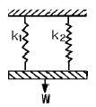
- 0.16
- 0.4
- 0.6
- 0.13
(정답률: 89%)
57. 목형의 중량이 15㎏f일 때 주물의 중량은 몇 kgf 인가? (단, 주물의 비중은 7.2이고, 목형의 비중은 0.5이다.)
- 7.5
- 108
- 180
- 216
(정답률: 39%)
58. 마찰면을 축방향으로 눌러 제동하는 브레이크는?
- 밴드 브레이크(band brake)
- 원심 브레이크(centrifugal brake)
- 원판 브레이크(disk brake)
- 블록 브레이크(block brake)
(정답률: 48%)
59. 다음 중 공압장치를 응용하여 실제 사용되는 예가 아닌 것은?
- 머시닝센터의 자동 문 개폐장치
- 드릴머신의 이송 자동화 장치
- 자동 세척장치
- 디프 드로잉 프레스
(정답률: 58%)
60. 다음 중 다이나 롤러를 사용하여 재료를 회전시키면서 압력을 가하여 제품을 만드는 가공방법으로 나사 등의 가공에 가장 적합한 가공방법은?
- 압연가공(rolling)
- 압출가공(extruding)
- 프레스가공(press working)
- 전조가공(form rolling)
(정답률: 38%)
4과목: 전기제어공학
61. 그림과 같은 회로망에서 전류를 산출하는 식은?
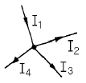
- I1+I2-I3-I4 = 0
- I1-I2-I3-I4 = 0
- I1+I2-I3+I4 = 0
- I1+I2+I3+I4 = 0
(정답률: 71%)
62. 어떤 회로에서 전류가 3분동안 흘러서 72000Ｊ의 일을하였다면 소비된 전력은 몇 W 인가?
- 300
- 400
- 500
- 600
(정답률: 92%)
63. 피드백제어계의 특징으로 옳은 것은?
- 정확성이 떨어진다.
- 감대폭이 감소한다.
- 계의 특성변화에 대한 입력대 출력비의 감도가 감소한다.
- 발진이 전혀 없고 항상 안정한 상태로 되어가는 경향이 있다.
(정답률: 62%)
64. 어떤 제어계의 임펄스 응답이 sinωt 일 때 계의 전달 함수는?
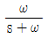
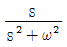
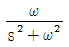
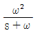
(정답률: 87%)
65. 전압계에 대한 설명으로 옳지 않은 것은?
- 동작원리는 전류계와 같다.
- 회로에 직렬로 접속한다.
- 내부저항이 있다.
- 가동코일형은 직류측정에 사용된다.
(정답률: 54%)
66. 서보기구에 사용되는 서보전동기는 피드백제어계의 구성요소 중 주로 어느 쪽의 기능을 담당하는가?
- 비교부
- 조작부
- 검출부
- 제어대상
(정답률: 60%)
67.
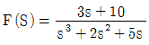
일 때 f(t)의 최종치는?- 0
- 1
- 2
- 8
(정답률: 80%)
68. 3300/200V, 10kVA인 단상변압기의 2차를 단락하여 1차측에 300V를 가하니 2차에 120A가 흘렀다. 1차정격전류는 약 몇 A 인가?
- 1.5
- 2
- 2.5
- 3
(정답률: 20%)
69. 시퀀스제어에서 기억과 판단기구 및 검출기를 가진 제어방식은?
- 순서프로그램제어
- 피드백제어
- 조건제어
- 시한제어
(정답률: 72%)
70. 각속도 ω를 전기적 유추로 변환하면?
- 저항
- 전류
- 인덕턴스
- 커패시턴스
(정답률: 46%)
71. 3상 권선형 유도전동기의 2차회로에 저항기를 접속시키는 이유가 될 수 없는 것은?
- 속도를 제어하기 위해서
- 기동전류를 제한시키기 위해서
- 기동토크를 크게 하기 위해서
- 최대토크를 크게 하기 위해서
(정답률: 57%)
72. 진동이 일어나는 장치의 진동을 억제시키는 데 가장 효과적인 제어 동작은?
- on-off 동작
- 비례동작
- 미분동작
- 적분동작
(정답률: 54%)
73. PLC 제어의 프로그램의 용이성에 대한 특징이 아닌 것은?
- 특별한 전문적 기술교육 없이 쉽게 이해할 수 있는 소프트 웨어이다.
- 계산기와는 달리 제어기능의 효과적인 수행이 목적이다.
- PLC를 사용한 시스템을 현장에서 보수하고 유지시키는 과정에서 PLC의 동작에 대한 특별한 지식 없이 가능하다.
- PLC의 외부 동작이 내부 동작으로의 변환이 용이하지 않다.
(정답률: 67%)
74. 전기로의 온도를 1000℃로 일정하게 유지시키기 위하여 열전온도계의 지시값을 보면서 전압조정기로 전기로에 대한 인가전압을 조절하는 장치가 있다. 이 경우 열전 온도계는 어느 용어에 해당되는가?
- 조작부
- 검출부
- 제어량
- 조작량
(정답률: 62%)
75. 전류에 의한 자장의 방향을 결정해 주는 법칙은?
- 암페어의 오른나사법칙
- 플레밍의 왼손법칙
- 렌쯔의 법칙
- 플레밍의 오른손법칙
(정답률: 68%)
76. 자동제어계에서 각 요소를 블럭선도로 표시할 때 각 요소 는 전달함수로 표시한다. 신호의 전달경로는 무엇으로 표현하는가?
- 접점
- 점선
- 화살표
- 스위치
(정답률: 81%)
77. 그림과 같은 논리회로의 출력 Y는?
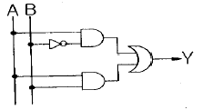
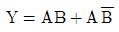
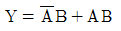
- Y=A+AB
- Y=AB+B
(정답률: 80%)
78. 대칭 3상 결선의 상전압이 220V이다. A상의 전원이 단선 되었을 때 선간전압은 몇 V 인가?
- 0
- 127
- 220
- 380
(정답률: 56%)
79. 유도전동기의 속도제어 방법이 아닌 것은?
- 극수변환
- 주파수제어
- 전기자 전압제어
- 슬립제어
(정답률: 41%)
80. △결선된 부하를 Y결선으로 바꾸면 소비전력은 어떻게 변하게 되는가? (단, 각 선간전압은 일정하다.)
- 1/3배
- 1/9배
- 3배
- 9배
(정답률: 74%)